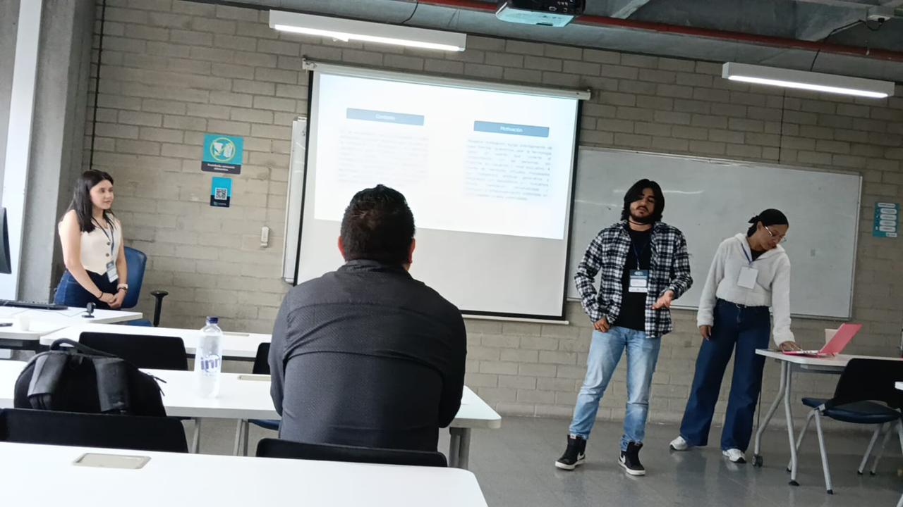
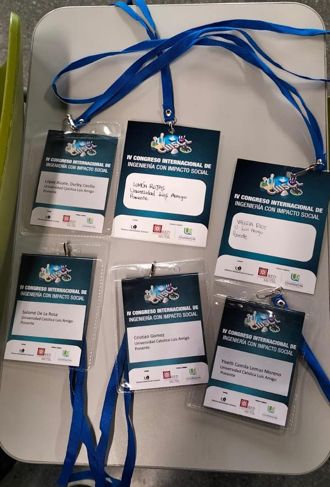
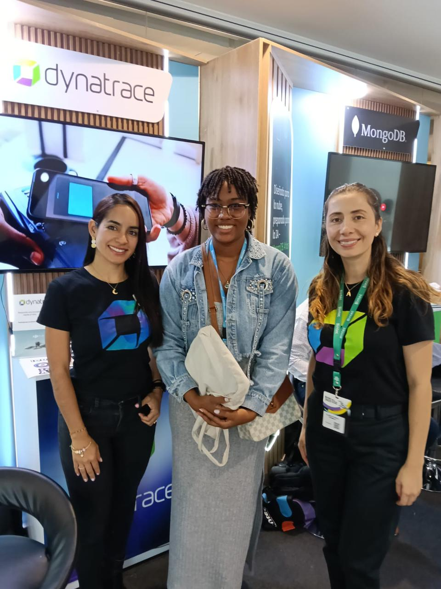
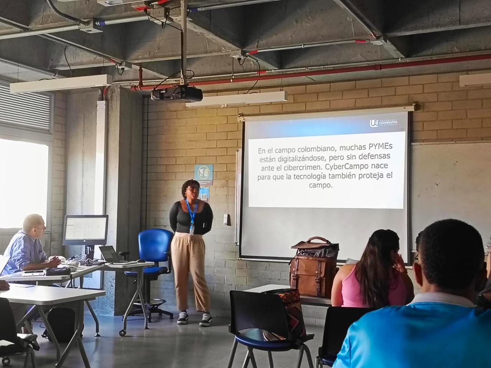
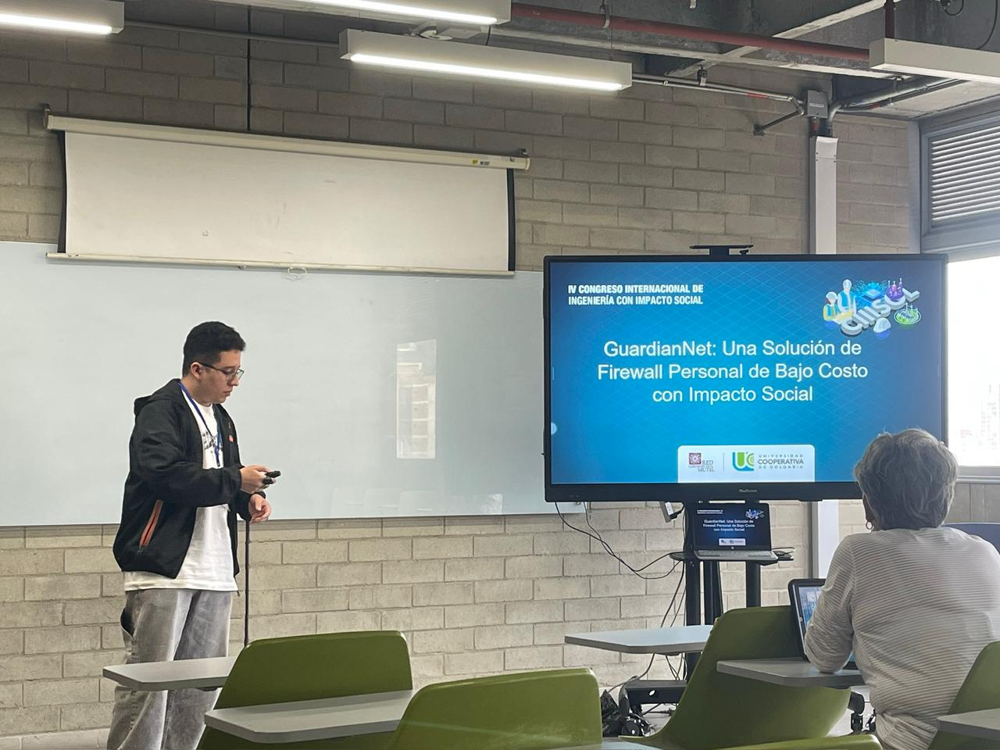
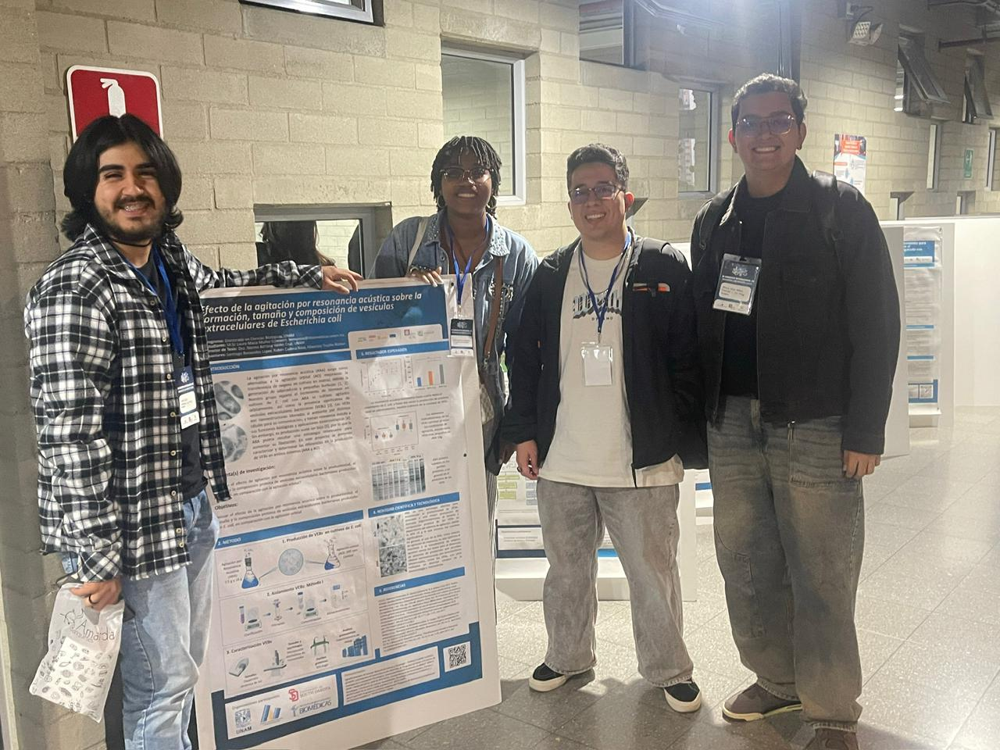
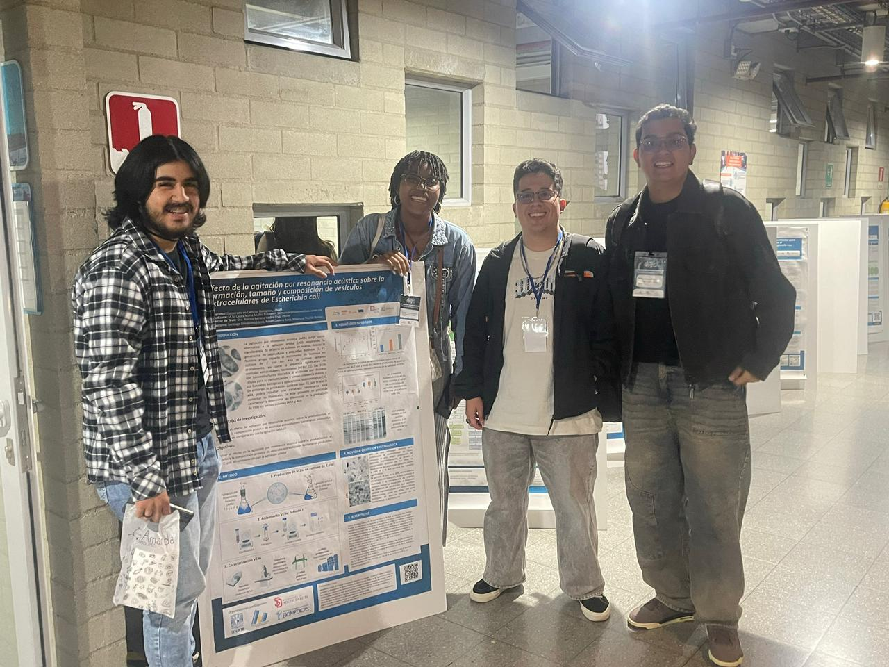
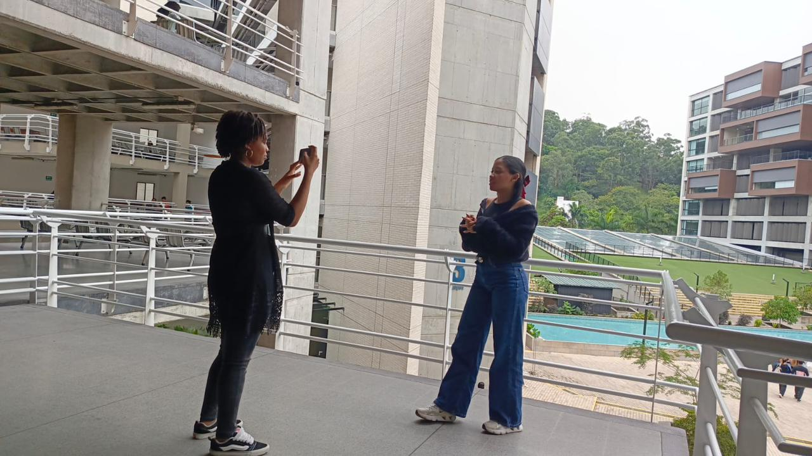
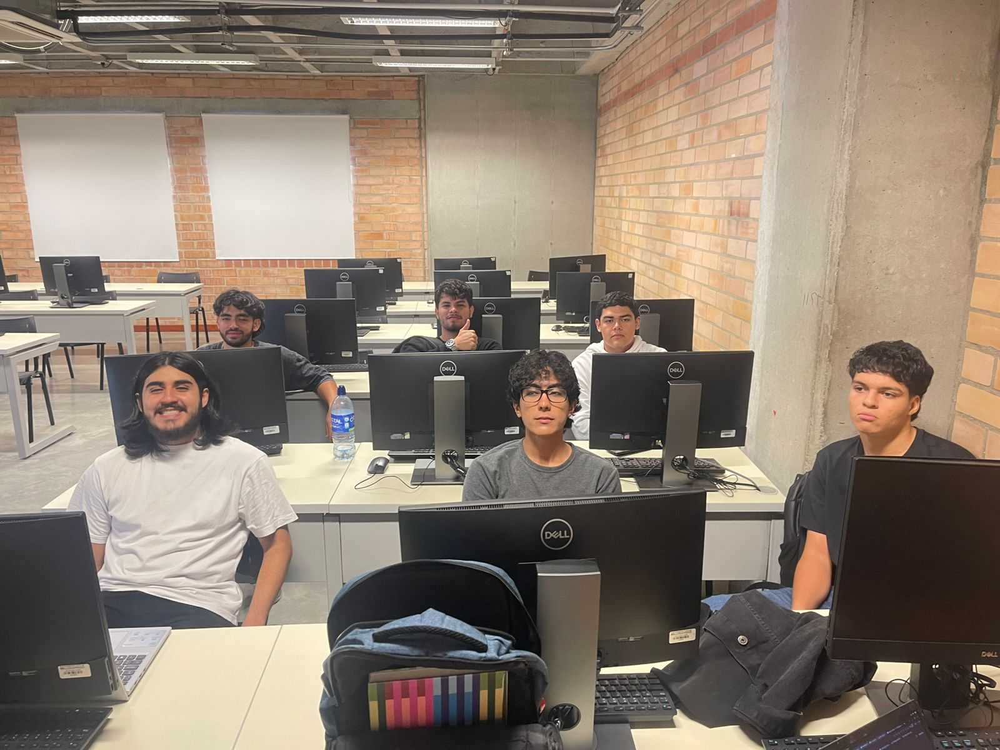
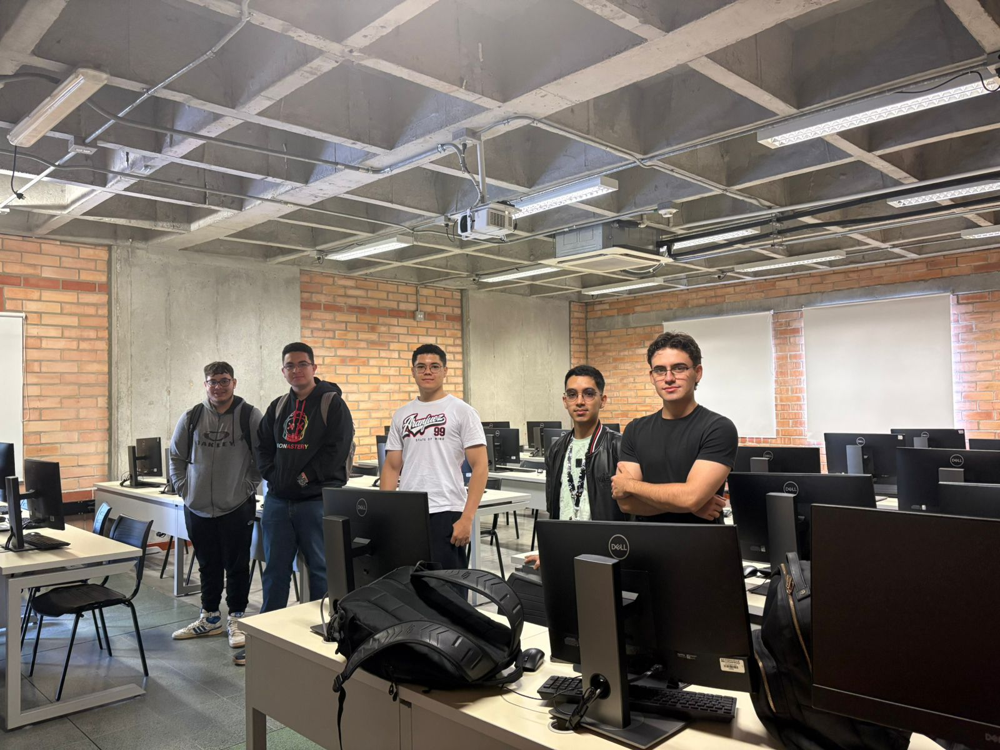

Construimos el futuro desde la investigación. Desarrollamos soluciones de impacto real en Inteligencia Artificial, Computación Cuántica y Ciberseguridad, desde la Universidad Católica Luis Amigó.
Métricas en tiempo real del semillero. Cada proyecto es una unidad de producción en movimiento.
IAXpert no solo investiga: construye. Desarrollamos productos de software institucional de alto impacto para la Universidad Católica Luis Amigó, combinando metodologías ágiles, arquitecturas modernas y visión de negocio. Cada proyecto es una solución lista para producción.
Sistema de Análisis de Datos para la Dirección de Extensión y Servicios a la Comunidad de UCLA. Procesamos grandes volúmenes de datos institucionales con pipelines Big Data para apoyar la toma de decisiones de extensión.
Centralizamos en una sola plataforma web toda la operación de la Dirección de Extensión: solicitudes, eventos, finanzas, alianzas y certificados. Cero Excel, cero silos de información.
Automatizamos el cruce de calificaciones con rúbricas RAP y generamos reportes listos para acreditación en segundos. Del Excel manual al dashboard interactivo, sin fricción.
Un único sistema para directores, asesores, estudiantes y comités. Ciclo completo de trabajos de grado, proyectos de investigación y producción académica con trazabilidad total.
IAXpert desarrolla software institucional a medida con estándares empresariales, metodologías ágiles y cero burocracia. Somos la fábrica de software de tu universidad.









